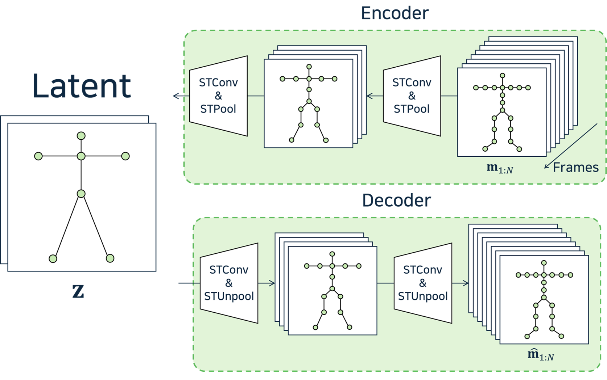

|
Serin Yoon Hello! I'm a Master’s student at GSCT KAIST, conducting research in Visual Media Lab, advised by Prof. Junyong Noh. My research interests are in Computer Graphics, Facial Animation, and VFX, particularly focusing on Speech-driven Facial Animation. I am passionate about deriving meaningful insights and results through the use of 3D geometry data. |

|
Research |
|

|
SALAD: Skeleton-aware Latent Diffusion for Text-driven Motion Generation and Editing
Seokhyeon Hong, Chaelin Kim, Serin Yoon, Junghyun Nam, Sihun Cha, Junyong Noh CVPR 2025 paper / project page / code A method that incorporates interactions between joints, frames, and words for text-driven motion generation and zero-shot editing. |
|
|
Neural Face Skinning for Mesh-agnostic Facial Expression Cloning
Sihun Cha, Serin Yoon, Kwanggyoon Seo, Junyong Noh Eurographics 2025, CGF paper / project page / code A method that enables direct retargeting between two facial meshes with different shapes and mesh structures. |

|
Simulation Tool for Theatrical Scene Design Using Generative AI
*Meongeun Kim, *Eunbyul Park, *Serin Yoon, Jaehong Ahn (*equal contribution) KCGS 2024 Poster Best Poster Award paper Simulation tool that leverages Generative AI to assist in staging musical scenes by simulating stage direction and design. |
|
|
Relative Depth-Based Oriental Black Ink Style Rendering
Minseong Kim, Serin Yoon, Sangmin Kim, Sungkil Lee KCGS 2022 Poster paper A rendering technique for generating ink-painting style edge images based on relative depth differences between object boundaries. |

|
Edge Computing based Cloud Parking Management System
Gilhan Park, Heedong Kim, Serin Yoon, Jaehwan Lee, Soyeon Jeong KIPS 2021 paper / video Edge-computing cloud system that automates tasks like entry/exit tracking and unauthorized parking detection. |
Experience |

|
Visual Media Lab
Student Researcher Feb 2024 - Ongoing |
Project |
|
|
Generating Hyper-Realistic to Extremely-stylized Face Avatar with Varied Speech Speed and Context-based Emotional Expression
Sep 2024 - Ongoing Development of customizable AI avatars that generate responsive, conversational facial animations, enabling lifelike interaction and feedback through intuitive user inputs. |
|
Last Update: Apr 2025
|